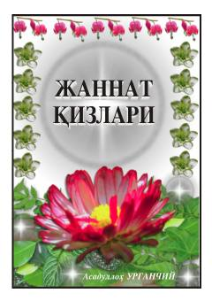

JQQur'on va hadislar asosida Jannat qizlari va oxirat ne'matlari haqida risola.
Ushbu kitobda Qur'on va hadislar asosida oxirat hayoti, Jannat va u yerdagi ne'matlar, jumladan, hurui aynlar va mo'minalarning maqomi haqida so'z boradi. Muallif mazkur mavzu orqali o'quvchilarda oxiratga intilish va iymonni mustahkamlash tuyg'usini kuchaytirishni maqsad qilgan.